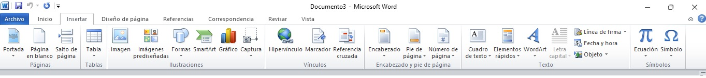
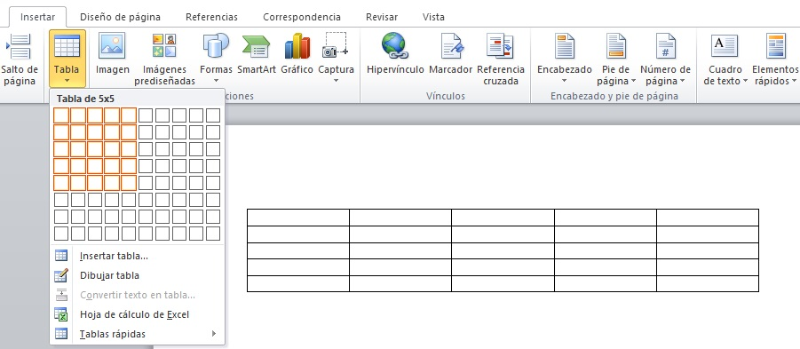
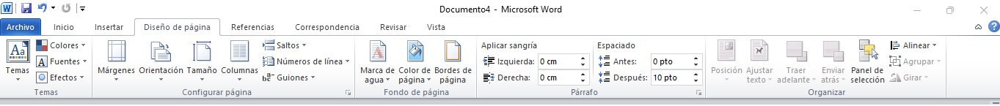

Contiene las funciones principales de edición de un documento de texto.
Las funciones cortar, copiar y pegar están al principio, seguidas de las funciones para dar formato a la fuente comoel tamaño, el color, negrita, cursiva, subrayado, entre otros.
Funciones de párrafo, en esta sección se encuentran los espacios entre líneas, la alineación del texto, las viñetas, elcolor de fondo y bordes.
Funciones de estilo, Da un formato predeterminado al documento.
Por último la sección de edición muestra funciones de búsqueda, reemplazo y selección. La búsqueda puede encontrar cualquier palabra que queramos dentro de nuestro documento con la posibilidad de reemplazarlo por alguna otra.
Pestaña
Insertar:
Contiene la sección de página para insertar una portada prediseñada o una página extra.
Tablas nos permite insertar tablas con varias
opciones
de diseño.
Ilustraciones inserta imágenes a nuetro antojo, pero también cuenta con imágenes prediseñadas, formas, gráficos y capturas de pantalla.
Vínculos inserta enlaces que hacen más sencilla la navegación en el documento y entre otros documentos, incluso puede aceptar enlaces a páginas web.
Encabezado y pie de página inserta estos estilos que permanecerán estables en todo el documento.
Texto inserta cuadros de texto adicionales con plantillas prediseñadas y wordArt, que son estilos de fuente con formas y colores variadas. También ofrece la posibilidad de insertar líneas de firmas digitales, fecha y hora y objetos de otros documentos.
Por último, la sección símbolos contiene ecuaciones matemáticas preestablecidas y una variedad grande de símbolos que no están en el teclado.
Pestaña
Diseño:
Contiene una serie de opciones que darán formato personalizado a la página que necesitamos, desde temas prediseñados, orientación, insertar marca de agua o bordes a la página, márgenes y posición de imágenes.
Practiquemos un poco:
Las primeras computadoras fueron diseñadas para el público en general